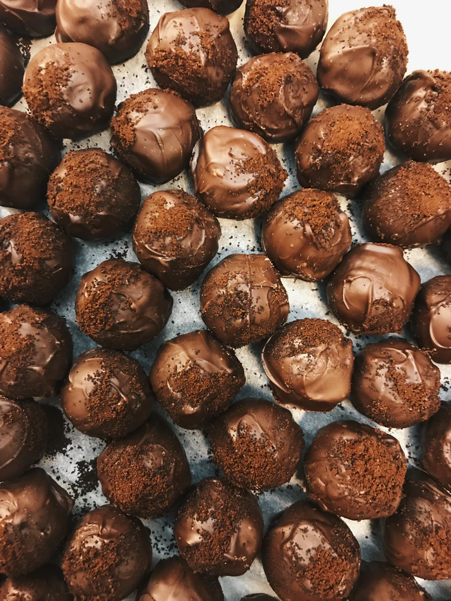

Click here to go back to our home page!
We have a wide selection of petite sweets for you to try, and our chefs are whipping up new creative flavours every month! This month's featured flavours are Burning Rose (rose chocolate with a sweet and spicy hot sauce center)and Lavender's Blue (lavender infused earl grey praline encased in butterfly pea glaze) amongst our usual favorites. Come into an outlet to have a look up close!
Our signature basil Pavlova cake is a delight you don't want to miss! Its popularity has cemented its spot on our permanent menu, along with its chocolate and traditional fruity counterparts. This summer's new cake is a rendition of Filipino cassava cake, slathered with luscious coconut cream and perfect for setting that island mood!
Other than a tropical twist our fan favorite cremè brûlée, this month's new arrivals consist of tangy, fresh passionfruit tart and juicy, creamy peach tart. These beautiful yellow desserts are sure to wash away the winter gloom and bring in the summer vibes!